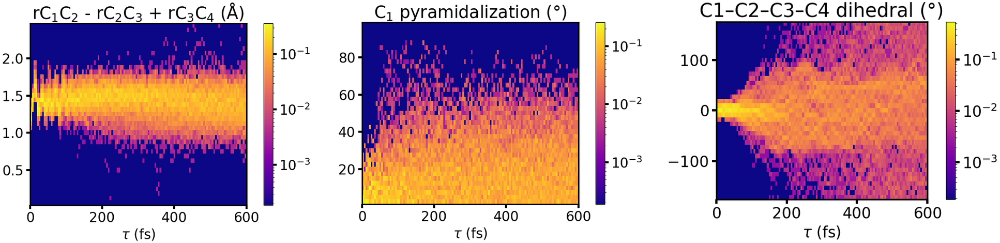

Key Structural Modes vs Time

- Trajectory-ensemble population densities of three key structural coordinates versus delay $\tau$
- Bond-length alternation ($r_{C_1C_2} - r_{C_2C_3} + r_{C_3C_4}$): the single/double-bond pattern relaxes toward a common $\sim$1.5 Å on excitation
- C$_1$ pyramidalization: the terminal-carbon out-of-plane angle builds within $\sim$100 fs — the approach to the conical intersection
- Central-bond torsion ($\phi_{C_1C_2C_3C_4}$): the dihedral spreads from planar toward $\pm$180° — the isomerisation channel